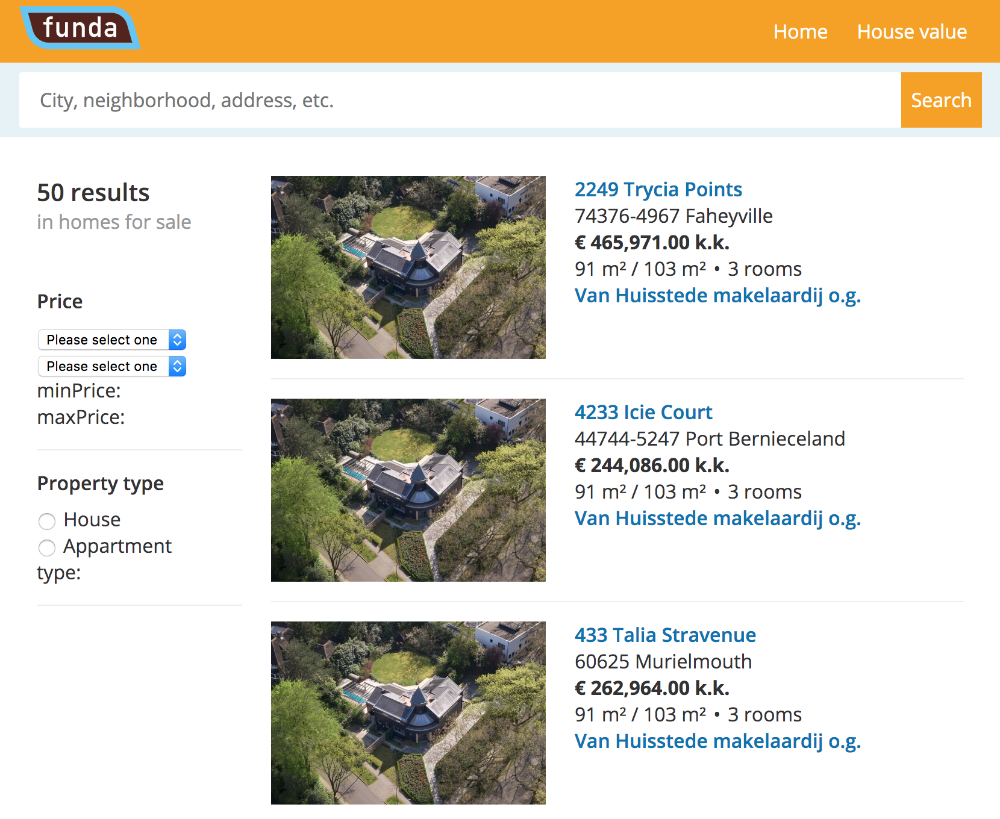

Funda workshop
Funda is an online real estate platform in Amsterdam. Funda started out as a small website and is now at the forefront of the newest applications of the internet in searching and finding real estate. To learn more about how everything and everyone works together in Funda, we (the web development minor) went there for a workshop.
Funda presentation
By Lars Douwe Schuitema
Lars is a front-end developer at Funda. From an early age, Lars taught himself how to program. and because of his passion for development, he went to study Communication and Multimedia Design (CMD). And then started working at Funda.
The Funda presentation started with Lars giving an introduction about himself. Then he gave information about Funda as a real estate company, how it began, a short history of the company, and what it has become. He also spoke about the company workflow, teams, and their responsibilities. That followed up with more information about the different websites that Funda has and what they use them for, and how they use them. At the end, he gave an introduction over the workshop. With an explanation about what we are going to do during the workshop.
Workshop
Before we started the workshop, we were split into groups/ teams of 7 to 8 students. Each team has to choose a SCRUM master, to be the one who is responsible for the team results and ensure communications with other teams.
The brief was that each team has to develop a small feature for a real estate website. The goal of this workshop is to combine the different features that each team developed into one single website. And to learn how to work in teams to make one website, and how to go through with challenges that we could bump into, for example, a Github conflict. Unfortunately due to time, we didn't have the chance to combine the features together.
Working with my team
As a team we got an assignment to make a filter feature for the website. The filter should help users to filter content on the website by price. During a short meeting with our SCRUM master (Marissa), she came up with the idea of splitting our team into a design team and a development team. To work more efficiently and ensure that we finish in time. After a short discussion over the teams we started working. I was in the development team to build the filter function. The template that we got from Funda, was built in Vue (framework). And this was my first time using this framework. So the first thing that we did was reading and following the Vue documentation to build the filter feature.
Our results
Due to time constraints and our lack of experience with Vue framework. We were not able to fully finish the feature.
Reflectie
Having the opportunity to do this workshop at Funda, was a great way to add more experience to what we learn at school. To learn more about working in real-life situations and to get to know more people (experts) from our field of work. Unfortunately, there wasn't enough time to experience the goal of this workshop (combining the code of the different features that the teams have developed).